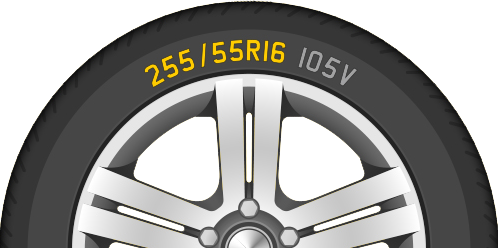
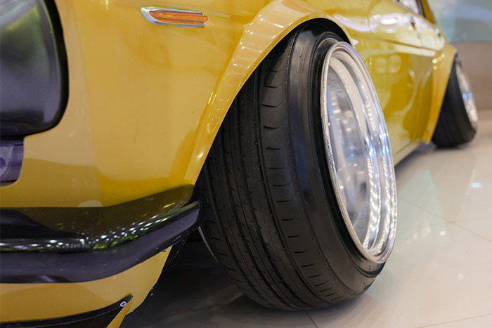

Sellel lehel räägime, mida tähendavad rehvitähised ning kuidas rehve valida.
Rehvide Külgedel on erinevad numbrid ning tähised.
- 255 - Rehvi laius millimeetrites
- 55 - Rehvi kõrgus protsentuaalselt laiusest.
- R16 - Velje diameeter tollides
- 105 - Koormusindeks
- V - Kiirusindeks

Kuidas leida endale õiged rehvid?
- 1. Veendu, et velje suurus tollides, oleks sama, mis rehvil R tähisega.
- 2. Veendu, et velje laius ning rehvi laius sobivad, kasutades tabelit, mille lehekülje alla paigutanud oleme.
- Lihtsam on minna Sõiduki taustakontroll leheküljele. Peale oma registreerimismärgi sisestamist on lehekülje allosas on teljed ning sobivad rehvide mõõdud.

Velgede ning rehvide sobivus
| Velje laius | Minimaalne rehvi laius | Ideaalne rehvi laius | Maksimaalne rehvi laius |
|---|---|---|---|
| 5.0 | 155 | 165 või 175 | 185 |
| 5.5 | 165 | 175 või 185 | 195 |
| 6.0 | 175 | 185 või 195 | 205 |
| 6.5 | 185 | 195 või 205 | 215 |
| 7.0 | 195 | 205 või 215 | 225 |
| 7.5 | 205 | 215 või 225 | 235 |
| 8.0 | 215 | 225 või 235 | 245 |
| 8.5 | 225 | 235 või 245 | 255 |
| 9.0 | 235 | 245 või 255 | 265 |
| 9.5 | 245 | 255 või 265 | 275 |
| 10.0 | 255 | 265 või 275 | 285 |
| 10.5 | 265 | 275 või 285 | 295 |
| 11.0 | 275 | 285 või 295 | 305 |
| 11.5 | 285 | 295 või 305 | 315 |
| 12.0 | 295 | 305 või 315 | 325 |
| 12.5 | 305 | 315 või 325 | 335 |